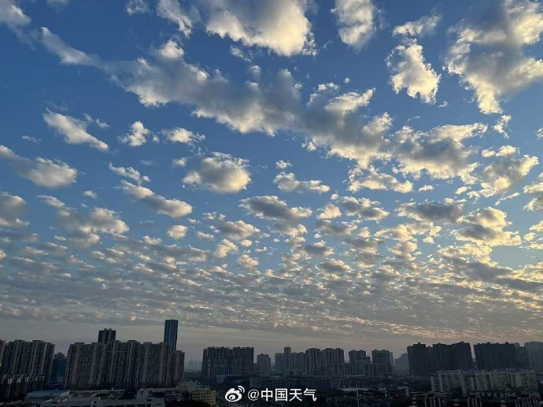

How did cumulus form?

Fractocumulus Clouds: The Broken Beauty of the Sky
BACK
How did cumulus form?
We study it in 3 different parts:
(1) When the earth's surface is uneven heating, the airflow will flow up caused by the density if the warmer aif will be low. This the begning of the motive.
(2 )the rising airflow is cooling up to the dew-point-temperature, the moisture will form the cloud droplet, and forming the lower part of the cloud.
The airflow of the cloud is stronger in the center and weaker aroud it, so the cloud will "pop up" n the center, and the skeleton will be clear.
BACK
Fractocumulus Clouds: The Broken Beauty of the Sky
Fractocumulus clouds, also known as "scattered cumulus" or "broken cumulus," are small, fragmented cloud patches that often appear in partly cloudy skies. Unlike the large, puffy cumulus clouds that dominate fair weather, fractocumulus clouds are irregular and disconnected, giving the sky a scattered, mosaic-like appearance.
These clouds form when rising warm air creates small pockets of condensation, but the conditions are not stable enough for full cumulus development. They are commonly seen during the early or late stages of fair-weather cumulus clouds, as well as during the breakup of larger cloud systems.
One of the most interesting aspects of fractocumulus clouds is their transient nature. They can quickly dissipate under sunlight or merge into larger cloud formations if atmospheric conditions change. Their delicate, broken shapes make them a favorite subject for sky watchers and photographers, as they create ever-changing patterns against the blue backdrop of the sky.
Though they may not bring significant weather changes, fractocumulus clouds serve as a reminder of the dynamic and fluid nature of our atmosphere. Next time you see these scattered cloud fragments, take a moment to appreciate their fleeting beauty—before they drift away or transform into something new.